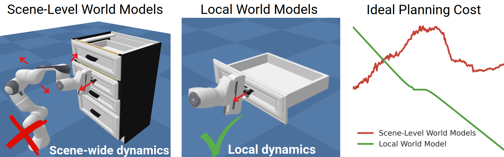
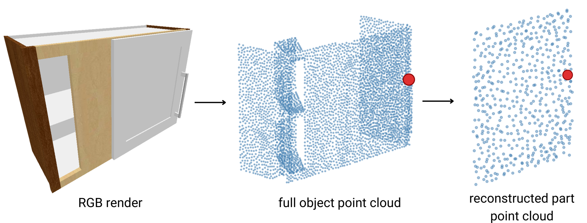
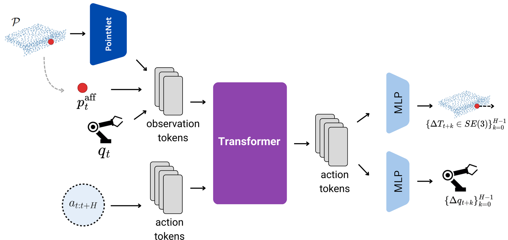
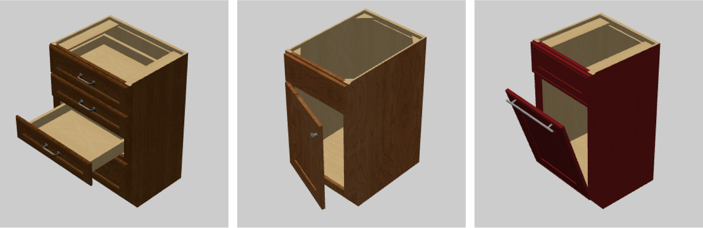
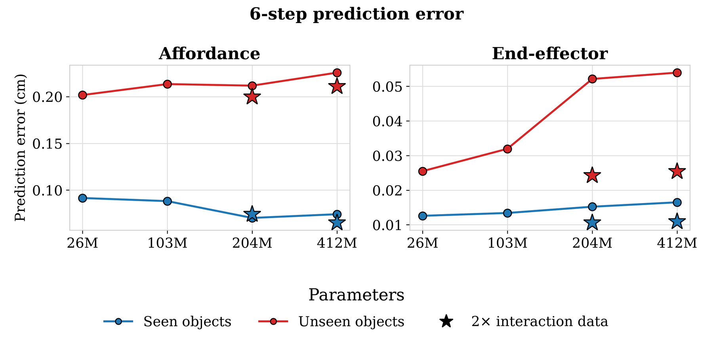
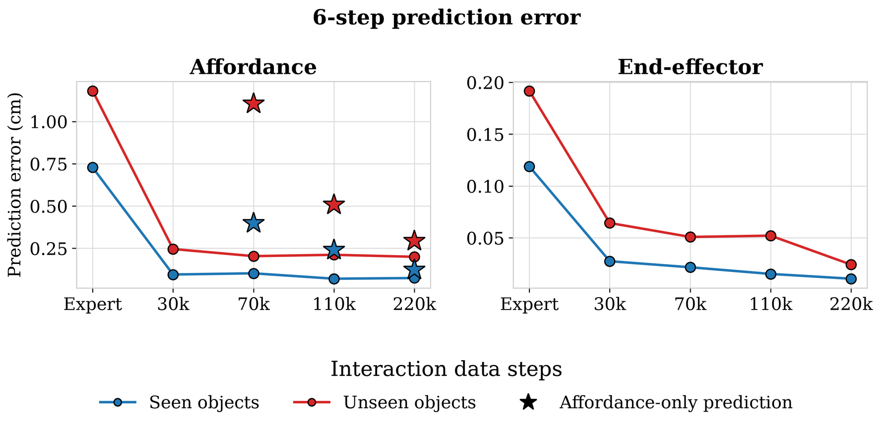

Local World Models for Articulated Object Manipulation
1University of Amsterdam
2University of Tübingen
3Toyota Motor Europe
4New Theory
RSS 2026 Workshop on Robot World Models
A simulated Franka arm opens a drawer with MPC, using the learned local world model as the dynamics model. Halfway, everything fades except what the model uses: points on the moving part, the affordance point and the state of the gripper. The kitchen is added for illustration.
Cabinets, drawers and doors are everywhere in human environments. Learning predictive models of them remains hard, because their geometries and joint configurations vary widely. Most world models predict the full scene. Dynamics prediction and planning then take place in a high-dimensional space, where much of the variation is irrelevant to the task. To open a drawer, however, a robot mainly needs to know how one part moves.
Building on this observation, we propose a local, affordance-centric world model. It represents only the moving part, a single affordance point on its surface, and the robot state. The model predicts rigid-body transformations directly in this compact geometric space, where representation, dynamics and goal share one coordinate frame. Combined with sampling-based Model Predictive Control (MPC), it opens drawers and doors from closed states without task-specific policy training, and reaches up to 65% success on unseen objects. The model is trained on interactions with only eight objects, yet planning success does not degrade on unseen ones. This suggests that the dynamics of articulated objects transfer across instances when they are modeled locally.

| Scene-level WM | Local WM (ours) | |
|---|---|---|
| Action-conditioned dynamics | ✓ | ✓ |
| Task-irrelevant dynamics removed by construction | ✗ | ✓ |
| Goal is a single 3D target point | ✗ | ✓ |
| Planning cost decreases with task progress | ✗ | ✓ |
The affordance point is the central abstraction. It tells the robot where to act. The geometry of the part around it determines how the part can move. The goal is then simply a target location for the same point.
The observation has three parts: the point cloud of the moving part (512 points), one affordance point on its surface, such as the handle, and the robot's proprioceptive state, namely its end-effector position, orientation and gripper opening. Everything else in the scene is left out. The goal is a target location for the affordance point.

The world model is a Transformer with a prefix-LM attention mask. Point cloud, proprioception and affordance tokens form a bidirectional prefix, and six action tokens are decoded causally. At each step, two MLP heads predict an SE(3) rigid-body transform of the part and the change in robot state. The transform moves both the part and its affordance point, so one forward pass yields a full 6-step trajectory. Nothing in the design depends on the joint type: the model handles revolute and prismatic joints without joint classification or axis estimation.

At each step, iCEM samples candidate action sequences and rolls them out through the model. The cost combines an engagement term, which brings the gripper to the affordance point, with a task-progress term, the Euclidean distance from the predicted affordance point to its goal. The robot executes the first action and plans again. Without further constraints, the optimizer exploits model errors. We therefore add two known priors:
A part cannot move unless the gripper touches it. The planner therefore gets no credit for part motion predicted before contact.
The robot's own motion is known. The commanded action therefore replaces the predicted change in robot state.

Three tasks from PartNet-Mobility in PyBullet: a drawer (prismatic), a side-hinged door and a bottom-hinged door (revolute).
The clips show successful MPC episodes on training (seen) and held-out (unseen) objects. The world model is trained on interactions with eight objects. These are selected examples: with the best configuration, about half of the episodes on seen objects and about a third on unseen objects do not reach full completion (see Results).
We run one selected drawer episode, with the same object, start, goal and seed, under three planner configurations. Without biases, the model sometimes predicts that the part moves before the gripper has touched it, and MPC exploits these predicted displacements.
After the workshop publication we found and fixed a bug in the planning code. Most planning success rates are now higher than in the OpenReview version.
We evaluate zero-shot MPC on 8 seen and 8 unseen objects, with 50 episodes per object. The planning biases are essential. Without them, MPC rarely completes the task (10–27% SR@0.8). The contact bias raises success to 34–60%, and the kinematics bias adds another 4–24 points. Success does not drop on unseen objects. In every configuration it is at least as high as on seen objects, although the variation between objects is large and the unseen drawers are among the easiest instances.
Why are the biases needed? Our interaction data are limited and come from only eight objects. MPC, however, searches for the actions that look best under the model, so it also visits states that the data barely cover. A typical case is a gripper that is close to the handle but not touching it. The model does not reliably tell the two apart and can predict that the part moves. The contact bias rules this out by hand. We see it partly as a substitute for broader interaction data, and expect it to become less important as data coverage grows.
| Model | Contact | Kinematics | SR@0.8 seen | SR@0.8 unseen |
|---|---|---|---|---|
| LWM-100M | 9.5 ±11.5 | 15.5 ±10.7 | ||
| LWM-100M | ✓ | 34.3 ±11.5 | 37.0 ±17.7 | |
| LWM-100M | ✓ | ✓ | 40.1 ±17.3 | 60.5 ±19.2 |
| LWM-200M | 14.5 ±14.0 | 26.5 ±19.5 | ||
| LWM-200M | ✓ | 45.9 ±9.4 | 60.2 ±23.9 | |
| LWM-200M | ✓ | ✓ | 53.9 ±14.3 | 64.5 ±23.8 |
Mean ± std over the per-object success rates. SR@0.8 is full completion. One seen object has 49 episodes because one archived start state is missing.
The model predicts two quantities over a 6-step horizon: the motion of the affordance point and the resulting end-effector state. We report the error at the last step on held-out episodes.


From 26M to 412M parameters, the affordance error stays at 0.07–0.09 cm (seen) and 0.20–0.23 cm (unseen).
Expert demonstrations alone leave a high error. Adding 30k interaction steps reduces the affordance error on unseen objects by about 5×. Beyond about 70k steps the error plateaus, which suggests that more of the same data is not enough.
A model that predicts only the affordance is worse at every data scale than one that also predicts the end-effector state.
We presented a local, affordance-centric world model that opens drawers and doors through planning. Its main result is that there is no seen–unseen gap in planning success: from interactions with only eight objects, the learned dynamics transfer across geometries and joint configurations. This suggests that a local, part-centric space is a natural place to model the dynamics of articulated objects.
Limitations. Absolute success rates are moderate. The cost only measures how far the affordance point moves, so many successful episodes rely on incidental contact or nudging rather than a stable grasp. The study is also small: we train on eight cabinet-like objects, evaluate only in simulation, and take part segmentation and affordance points from the simulator. We do not compare against a scene-level world model on the same tasks.
Next steps. Three directions follow naturally. The first is to scale up, with larger datasets such as ArtVIP and with planning rollouts as new training data. The second is to model contact better, by moving from PyBullet to MuJoCo. The third is to improve realism, by replacing simulator inputs with learned 3D reconstruction and affordance prediction.